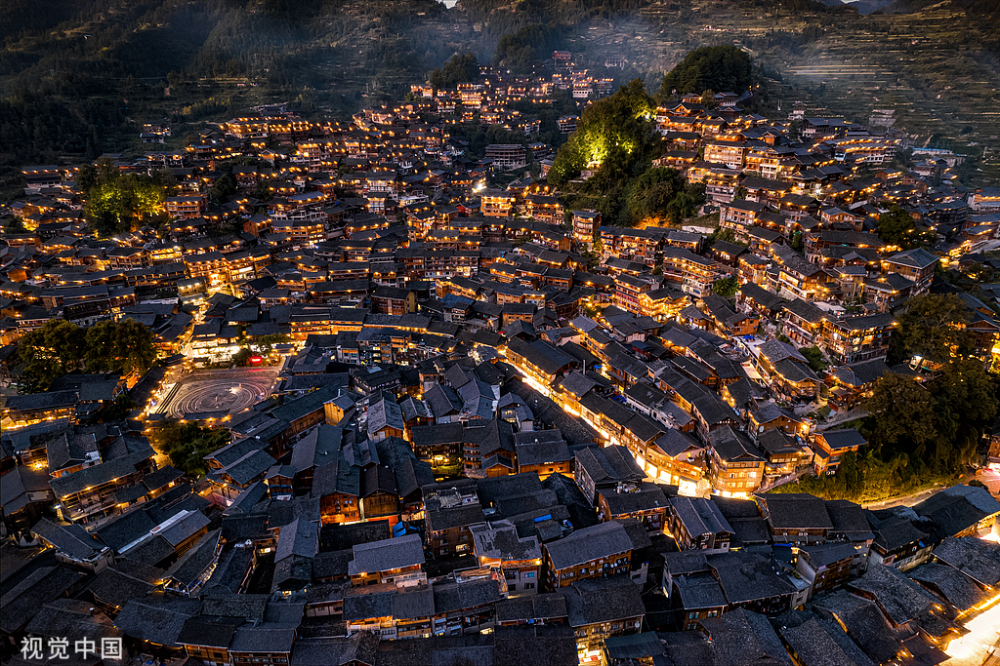
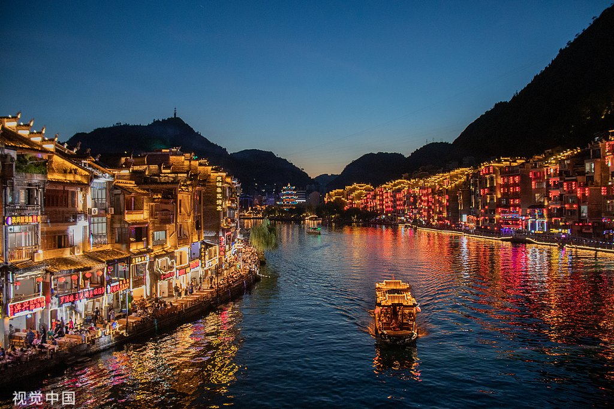

景点多媒体
图文音频全方位展示贵州五大核心景点
核心景点介绍

黄果树瀑布
黄果树瀑布位于贵州省安顺市镇宁布依族苗族自治县，是亚洲最大的瀑布之一。瀑布高77.8米，宽101米，气势磅礴，景色壮观。最佳观赏时间为上午10-12点，此时阳光照射角度最佳。

西江千户苗寨
西江千户苗寨位于贵州省雷山县，是世界上最大的苗族聚居村寨。寨子依山而建，层层叠叠的吊脚楼构成壮观的建筑群。夜幕降临时，万家灯火点亮整个山寨，景色尤为迷人。

荔波小七孔
荔波小七孔景区位于贵州省荔波县，以七孔古桥为核心景点。景区内清澈的溪水、古老的石桥、茂密的原始森林构成了一幅天然画卷，被誉为"地球腰带上的绿宝石"。

镇远古镇
镇远古镇位于贵州省黔东南苗族侗族自治州，是一座有着2000多年历史的古镇。古镇依山傍水，古建筑保存完好，㵲阳河穿城而过，形成了独特的山水城市格局。

黔灵山公园
黔灵山公园位于贵阳市中心，是贵阳市最大的综合性公园。公园内有弘福寺、猕猴观赏区、动物园等景点，是市民休闲娱乐的好去处，也是亲子游的理想选择。
景点特色对比
| 景点名称 | 特色 | 最佳观赏时间 | 适合人群 | 游玩时间 |
|---|---|---|---|---|
| 黄果树瀑布 | 自然景观、壮观瀑布 | 上午10-12点 | 所有人群 | 3-4小时 |
| 西江千户苗寨 | 民族文化、夜景 | 傍晚至夜间 | 文化爱好者 | 5-6小时 |
| 荔波小七孔 | 山水风光、自然生态 | 全天 | 自然爱好者 | 4-5小时 |
| 镇远古镇 | 历史文化、古镇风情 | 全天 | 历史爱好者 | 3-4小时 |
| 黔灵山公园 | 城市休闲、亲子互动 | 上午或下午 | 家庭游客 | 2-3小时 |